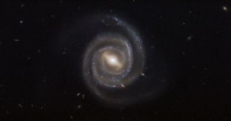
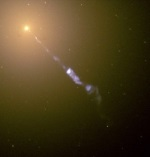

An active galactic nucleus (AGN) is a compact region at the center of a galaxy that has a much higher than normal luminosity over at least some portion–and possibly all–of the electromagnetic spectrum, with characteristics indicating that the excess luminosity is not produced by stars. Such excess non-stellar emission has been observed in the radio, microwave, infrared, optical, ultra-violet, X-ray and gamma ray wavebands. A galaxy hosting an AGN is called an active galaxy. The radiation from an AGN is believed to be a result of accretion of matter by a supermassive black hole at the center of its host galaxy. AGN are the most luminous persistent sources of electromagnetic radiation in the universe, and as such can be used as a means of discovering distant objects; their evolution as a function of cosmic time also puts constraints on models of the cosmos. The observed characteristics of an AGN depend on several properties such as the mass of the central black hole, the rate of gas accretion onto the black hole, the orientation of the accretion disk, the degree of obscuration of the nucleus by dust, and presence or absence of jets. Numerous subclasses of AGN have been defined based on their observed characteristics; the most powerful AGN are classified as quasars.
Models
For a long time it has been argued that an AGN must be powered by accretion of mass onto massive black holes (106 to 1010 times the Solar mass). AGN are both compact and persistently extremely luminous. Accretion can potentially give very efficient conversion of potential and kinetic energy to radiation, and a massive black hole has a high Eddington luminosity, and as a result, it can provide the observed high persistent luminosity. Supermassive black holes are now believed to exist in the centres of most if not all massive galaxies since the mass of the black hole correlates well with the velocity dispersion of the galactic bulge (the M-sigma relation) or with bulge luminosity. Thus AGN-like characteristics are expected whenever a supply of material for accretion comes within the sphere of influence of the central black hole.
Accretion disc
In the standard model of AGN, cold material close to a black hole forms an accretion disc. Dissipative processes in the accretion disc transport matter inwards and angular momentum outwards, while causing the accretion disc to heat up. The expected spectrum of an accretion disc peaks in the optical-ultraviolet waveband; in addition, a corona of hot material forms above the accretion disc and can inverse-Compton scatter photons up to X-ray energies. The radiation from the accretion disc excites cold atomic material close to the black hole and this in turn radiates at particular emission lines. A large fraction of the AGN's radiation may be obscured by interstellar gas and dust close to the accretion disc, but (in a steady-state situation) this will be re-radiated at some other waveband, most likely the infrared.
Relativistic jets
Some accretion discs produce jets of twin, highly collimated, and fast outflows that emerge in opposite directions from close to the disc. The direction of the jet ejection is determined either by the angular momentum axis of the accretion disc or the spin axis of the black hole. The jet production mechanism and indeed the jet composition on very small scales are not understood at present due to the resolution of astronomical instruments being too low. The jets have their most obvious observational effects in the radio waveband, where very-long-baseline interferometry can be used to study the synchrotron radiation they emit at resolutions of sub-parsec scales. However, they radiate in all wavebands from the radio through to the gamma-ray range via the synchrotron and the inverse-Compton scattering process, and so AGN jets are a second potential source of any observed continuum radiation.
Radiatively inefficient AGN
There exists a class of 'radiatively inefficient' solutions to the equations that govern accretion. The most widely known of these is the Advection Dominated Accretion Flow (ADAF), but other theories exist. In this type of accretion, which is important for accretion rates well below the Eddington limit, the accreting matter does not form a thin disc and consequently does not efficiently radiate away the energy that it acquired as it moved close to the black hole. Radiatively inefficient accretion has been used to explain the lack of strong AGN-type radiation from massive black holes at the centres of elliptical galaxies in clusters, where otherwise we might expect high accretion rates and correspondingly high luminosities. Radiatively inefficient AGN would be expected to lack many of the characteristic features of standard AGN with an accretion disc.
Types of active galaxy
It is convenient to divide AGN into two classes, conventionally called radio-quiet and radio-loud. Radio-loud objects have emission contributions from both the jet(s) and the lobes that the jets inflate. These emission contributions dominate the luminosity of the AGN at radio wavelengths and possibly at some or all other wavelengths. Radio-quiet objects are simpler since jet and any jet-related emission can be neglected at all wavelengths.
AGN terminology is often confusing, since the distinctions between different types of AGN sometimes reflect historical differences in how the objects were discovered or initially classified, rather than real physical differences.
Radio-quiet AGN
- Low-ionization nuclear emission-line regions (LINERs). As the name suggests, these systems show only weak nuclear emission-line regions, and no other signatures of AGN emission. It is debatable whether all such systems are true AGN (powered by accretion on to a supermassive black hole). If they are, they constitute the lowest-luminosity class of radio-quiet AGN. Some may be radio-quiet analogues of the low-excitation radio galaxies (see below).
- Seyfert galaxies. Seyferts were the earliest distinct class of AGN to be identified. They show optical range nuclear continuum emission, narrow and occasionally broad emission lines, occasionally strong nuclear X-ray emission and sometimes a weak small-scale radio jet. Originally they were divided into two types known as Seyfert 1 and 2: Seyfert 1s show strong broad emission lines while Seyfert 2s do not, and Seyfert 1s are more likely to show strong low-energy X-ray emission. Various forms of elaboration on this scheme exist: for example, Seyfert 1s with relatively narrow broad lines are sometimes referred to as narrow-line Seyfert 1s. The host galaxies of Seyferts are usually spiral or irregular galaxies.
- Radio-quiet quasars/QSOs. These are essentially more luminous versions of Seyfert 1s: the distinction is arbitrary and is usually expressed in terms of a limiting optical magnitude. Quasars were originally 'quasi-stellar' in optical images as they had optical luminosities that were greater than that of their host galaxy. They always show strong optical continuum emission, X-ray continuum emission, and broad and narrow optical emission lines. Some astronomers use the term QSO (Quasi-Stellar Object) for this class of AGN, reserving 'quasar' for radio-loud objects, while others talk about radio-quiet and radio-loud quasars. The host galaxies of quasars can be spirals, irregulars or ellipticals. There is a correlation between the quasar's luminosity and the mass of its host galaxy, in that the most luminous quasars inhabit the most massive galaxies (ellipticals).
- 'Quasar 2s'. By analogy with Seyfert 2s, these are objects with quasar-like luminosities but without strong optical nuclear continuum emission or broad line emission. They are scarce in surveys, though a number of possible candidate quasar 2s have been identified.
Radio-loud AGN
See main article Radio galaxy for a discussion of the large-scale behaviour of the jets. Here, only the active nuclei are discussed.
- Radio-loud quasars behave exactly like radio-quiet quasars with the addition of emission from a jet. Thus they show strong optical continuum emission, broad and narrow emission lines, and strong X-ray emission, together with nuclear and often extended radio emission.
- “Blazars” (BL Lac objects and OVV quasars) classes are distinguished by rapidly variable, polarized optical, radio and X-ray emission. BL Lac objects show no optical emission lines, broad or narrow, so that their redshifts can only be determined from features in the spectra of their host galaxies. The emission-line features may be intrinsically absent or simply swamped by the additional variable component. In the latter case, emission lines may become visible when the variable component is at a low level. OVV quasars behave more like standard radio-loud quasars with the addition of a rapidly variable component. In both classes of source, the variable emission is believed to originate in a relativistic jet oriented close to the line of sight. Relativistic effects amplify both the luminosity of the jet and the amplitude of variability.
- Radio galaxies. These objects show nuclear and extended radio emission. Their other AGN properties are heterogeneous. They can broadly be divided into low-excitation and high-excitation classes. Low-excitation objects show no strong narrow or broad emission lines, and the emission lines they do have may be excited by a different mechanism. Their optical and X-ray nuclear emission is consistent with originating purely in a jet. They may be the best current candidates for AGN with radiatively inefficient accretion. By contrast, high-excitation objects (narrow-line radio galaxies) have emission-line spectra similar to those of Seyfert 2s. The small class of broad-line radio galaxies, which show relatively strong nuclear optical continuum emission probably includes some objects that are simply low-luminosity radio-loud quasars. The host galaxies of radio galaxies, whatever their emission-line type, are essentially always ellipticals.